Modelling the volatility of the rand with GARCH models (Part 1, ARCH / GARCH; implementation project; covers real-world data and model comparison).
This project asks whether the USD/ZAR exchange rate shows volatility clustering, which GARCH-type model and error distribution describe it best, and how persistent shocks to the rand’s volatility are. I used daily USD/ZAR closing rates from 1 January 2015 to 31 December 2025, downloaded from Yahoo Finance with quantmod::getSymbols("ZAR=X") and converted to daily log returns in percent, \(r_t = 100 \times \log(P_t / P_{t-1})\), after removing days with missing values and six extreme outlier returns. After exploring the returns and squared returns (ACF, ARCH LM test), I chose a constant mean using the Ljung-Box test and an ARMA comparison. I then fitted GARCH(1,1) models with rugarch using normal, Student t and skewed t errors, added GJR-GARCH and EGARCH, and compared them with QQ plots, AIC/BIC and standardised residual diagnostics.
The returns are uncorrelated but show strong volatility clustering (ARCH LM test \(p < 0.001\)). The best model was a constant mean with GJR-GARCH(1,1) and skewed t errors (\(\hat\xi = 1.18\), \(\hat\nu = 14.7\)), which beat the normal and Student t errors and the symmetric GARCH on AIC and BIC. Volatility rises mostly after positive returns (rand weakening), since \(\hat\delta = -0.037\) almost cancels \(\hat\alpha_1 = 0.042\) for negative shocks, and persistence is very high (\(\hat\rho = 0.9956\), half-life about 158 days). The predicted price is essentially the previous day’s price, so the model’s value is the changing width of the prediction band rather than the point forecast.
If I did this again, I would address three limitations. The residual tests still show weak short-lag dependence in the squared residuals, and GJR(2,1) and (1,2) did not remove it, so I would try other variance structures. The long-run volatility is poorly estimated (0.72% against a sample standard deviation of 0.96%), because persistence is near one and \(\hat\alpha_0\) is not significant. I would also refit before and after 2020 to check for a structural break, and evaluate the forecasts out of sample. A full detailed analysis follows below.
10.2 Data and EDA
10.2.1 Downloading the data
This project used ARCH and GARCH models to analyse the volatility of daily USD/ZAR exchange rate data from 1 January 2015 to 31 December 2025. The data was downloaded from Yahoo Finance using the quantmod package, and days with missing values were removed from the data set. Each observation is the daily closing USD/ZAR exchange rate (rand per US dollar), which is the rate at the end of that day’s trading.
Our first step is to analyse the data visually. Figure 10.1 below plots the exchange rate (or the price level) at close for each day over the time period of interest.
Code
plot(data$date, data$exchange_rate, type ="l", xlab ="time", ylab ="rands per dollar (price level)")
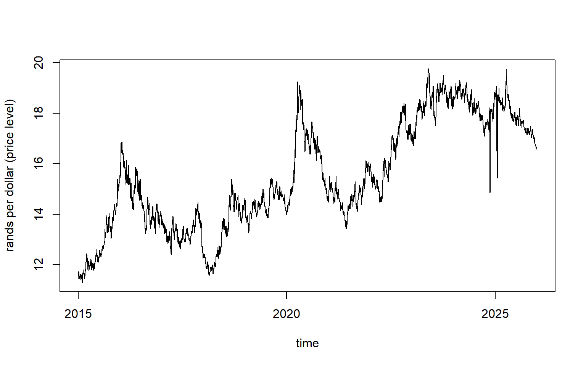
Figure 10.1: Daily USD/ZAR exchange rates
The upward trend over time in Figure 10.1 above shows that over the 11 years from the start of 2015 to the end of 2025, the exchange rate increased. One dollar only was worth roughly R12, but at the end one dollar was worth nearly R18. The value of the Rand has an inverse relationship with the USD/ZAR exchange rate, and thus the value of the Rand relative to the dollar decreased over this period as the price level increased. As there is a clear trend, the data is not stationary. We can confirm this with a Ljung-Box test for autocorrelation.
Code
Box.test(data$exchange_rate, lag =10, type ="Ljung-Box")
The p-value < 0.001 shows there is significant evidence of autocorrelation.
When working with financial data, we are usually more interested in returns \(r_t\) than price levels \(P_t\). There are three types of returns. Simple return shows the percentage change in the price. Gross returns are ratio amount by which the price level increased or decreased from one day to the next. Logarithmic returns show the log of the gross returns and are most preferable as you can add log returns over time to get the total return for that period. Figure 10.2 below shows simple and log returns for our data.
Code
data$simple_return <-c(NA, 100*diff(data$exchange_rate) /head(data$exchange_rate, -1))data$gross_return <-1+ data$simple_return /100data$logarithmic_return <-100*log(data$gross_return)returns <- data$logarithmic_return[-1] # first value is always NApar(mfrow =c(2, 1))plot(data$date, data$simple_return, type ="l", xlab ="", ylab ="R_t",main ="Simple returns")plot(data$date, data$logarithmic_return, type ="l", xlab ="", ylab ="r_t",main ="Logarithmic returns")
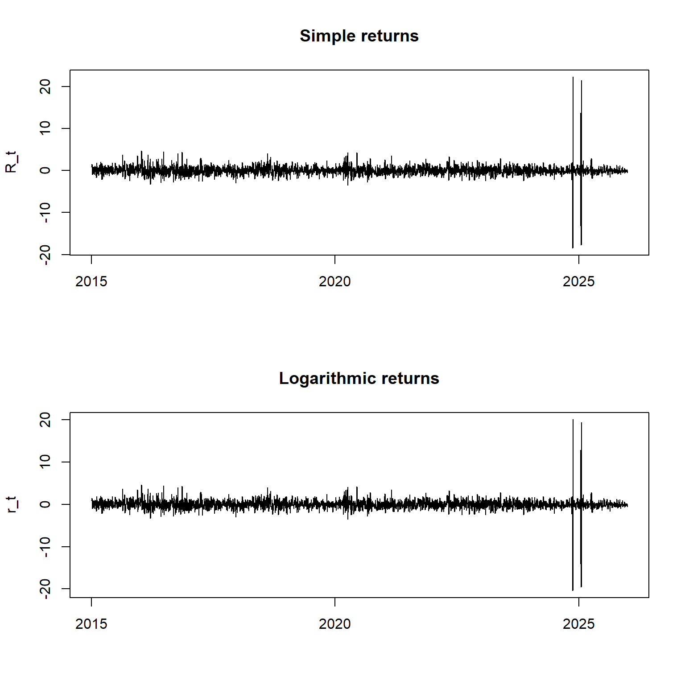
Figure 10.2: Daily simple returns in percent (top) and logarithmic returns in percent (bottom), before cleaning.
In Figure 10.2 above, we see that differencing has removed the upward trend that was present on the price level data. However, there are several returns around November 2024 and January 2025 that are drastically different from the others. If we look at how the return data is distributed, we see that the data looks normally distributed around 0, with some outliers reaching positive and minus 20. This is evident in Figure 10.3 below.
Code
par(mfrow =c(1, 2))plot(density(returns), main ="Density of returns")boxplot(returns, main ="Boxplot of returns", ylab ="r_t")summary(returns)
Min. 1st Qu. Median Mean 3rd Qu. Max.
-20.41128 -0.59377 -0.03575 0.01295 0.59260 20.08841
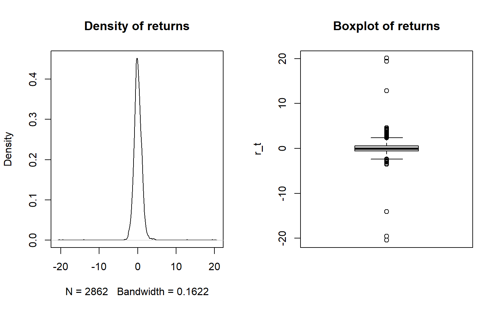
Figure 10.3: Density (left) and boxplot (right) of the daily logarithmic returns before cleaning.
In Figure 10.3, the density plot shows that there are very long tails, and the boxplot shows that the outliers are much bigger in absolute value than most of the data. These outliers are evident in the normal quantile plot in Figure 10.4 below.
Code
qqnorm(returns, main ="Normal QQ plot of returns"); qqline(returns, col ="red")
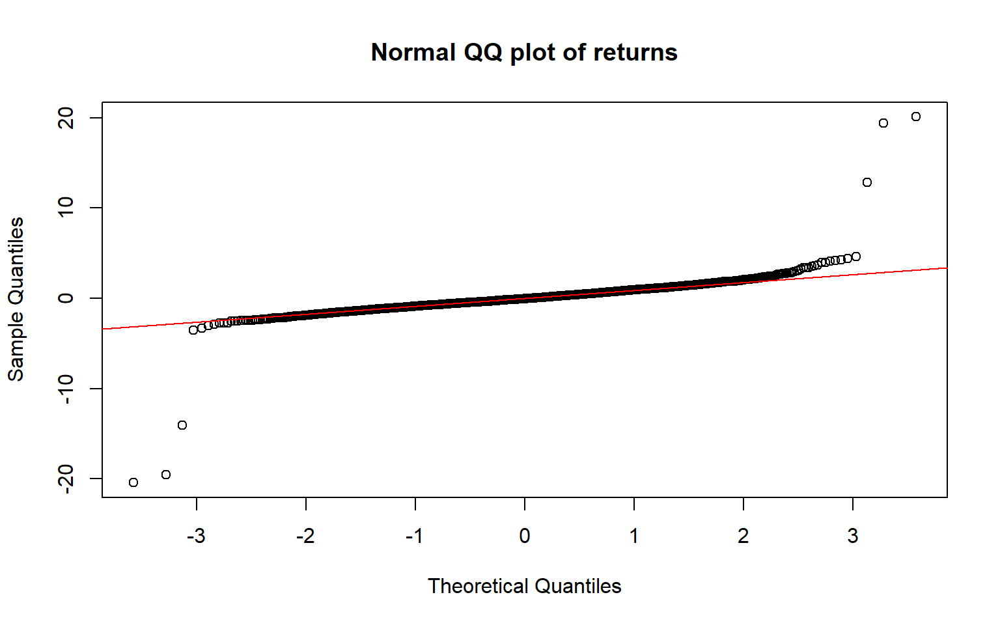
Figure 10.4: Normal QQ plot of the logarithmic returns before cleaning.
Figure 10.4 above shows that most of the returns appear normal, but the values in the tails are outliers. All the outliers have an absolute value greater than 12, with the next highest being less than 5. Table 10.1 shows these returns, together with the price on the day before and the day after each one, and Figure 10.5 marks them in red on the original price level and return series.
Table 10.1: Returns with an absolute value above 5%, with the price on the days before and after.
date
prev_price
exchange_rate
next_price
logarithmic_return
2024-11-15
18.225
14.860
18.167
-20.411
2024-11-18
14.860
18.167
17.938
20.088
2025-01-15
18.986
16.499
18.757
-14.038
2025-01-16
16.499
18.757
15.430
12.827
2025-01-17
18.757
15.430
18.732
-19.524
2025-01-20
15.430
18.732
18.496
19.389
Code
outliers <- data |>filter(abs(logarithmic_return) >5)par(mfrow =c(2, 1))plot(data$date, data$exchange_rate, type ="l", xlab ="", ylab ="rands per dollar",main ="Price level")points(outliers$date, outliers$exchange_rate, col ="red", pch =16)plot(data$date, data$logarithmic_return, type ="l", xlab ="", ylab ="r_t",main ="Logarithmic returns")points(outliers$date, outliers$logarithmic_return, col ="red", pch =16)par(mfrow =c(1, 1))
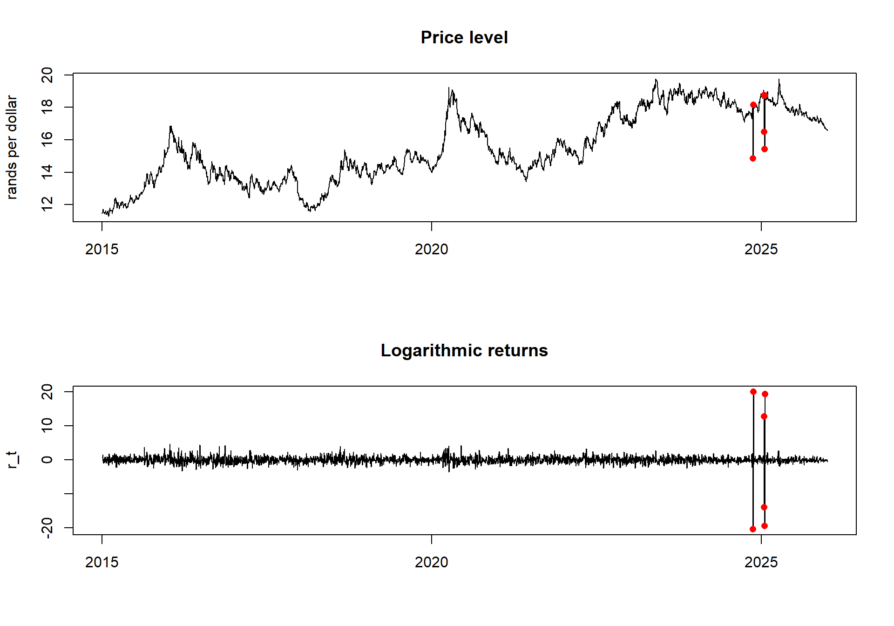
Figure 10.5: Daily USD/ZAR price (top) and logarithmic returns (bottom) before cleaning, with the outliers shown in red.
In Figure 10.5, the six outliers come from three single days (15 November 2024, 15 January 2025 and 17 January 2025) where the price drops to between R14.9 and R16.5, while the prices around those days are between R18.2 and R19.0. Each of these produces two outlier returns, the fall and the rebound the following day, which is visible in Table 10.1. Because the price reverts straight back, these look like data errors rather than genuine movements in the rand, so we remove them.
After identifying the outliers, we remove them from the data, and repeat our plots of the data as we did previously to see how things now look. Each of these plots are shown in Figure 10.6 below.
Code
data_clean <- data |>filter(abs(logarithmic_return) <=5)returns <- data_clean$logarithmic_return[-1] # first value is always NAdata_clean$simple_return <-c(NA, 100*diff(data_clean$exchange_rate) /head(data_clean$exchange_rate, -1))data_clean$gross_return <-1+ data_clean$simple_return /100data_clean$logarithmic_return <-100*log(data_clean$gross_return)par(mfrow =c(2, 2))plot(data_clean$date, data_clean$logarithmic_return, type ="l", xlab ="", ylab ="r_t",main ="Logarithmic returns")plot(density(data_clean$logarithmic_return[-1]), main ="Density of returns")boxplot(data_clean$logarithmic_return[-1], main ="Boxplot of returns", ylab ="r_t")qqnorm(data_clean$logarithmic_return[-1], main ="Normal QQ plot of returns"); qqline(returns, col ="red")
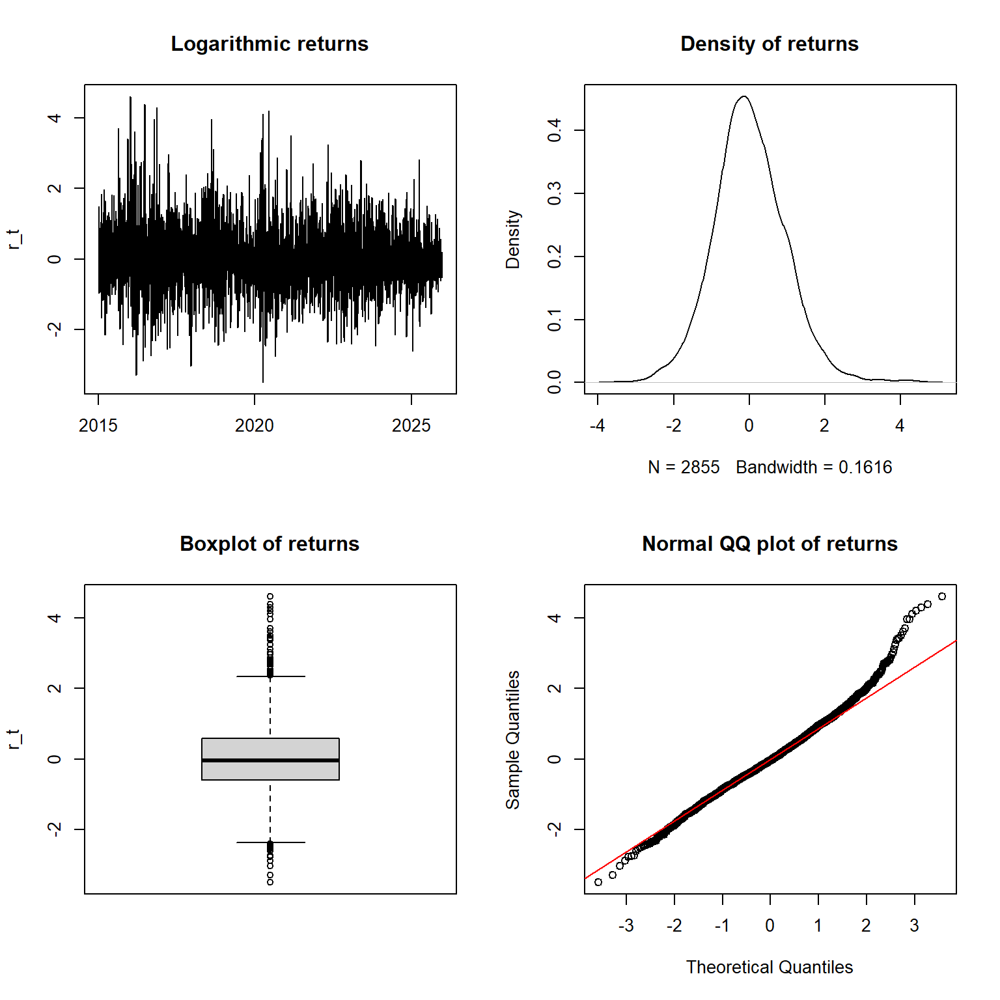
Figure 10.6: Repeat of plots to check for outliers
We can clearly see from each of the plots in Figure 10.6 above that there are no further clear outliers, and we are ready to begin our analysis.
10.2.3 ACF of returns and squared returns
Next, we check for evidence of volatility clustering in the logarithmic return data (from now on referred to as “returns”). We do this by using ACF plots of the returns, as shown in Figure 10.7 below.
Code
par(mfrow =c(1, 2))acf(returns, main ="returns")acf(returns^2, main ="squared returns")
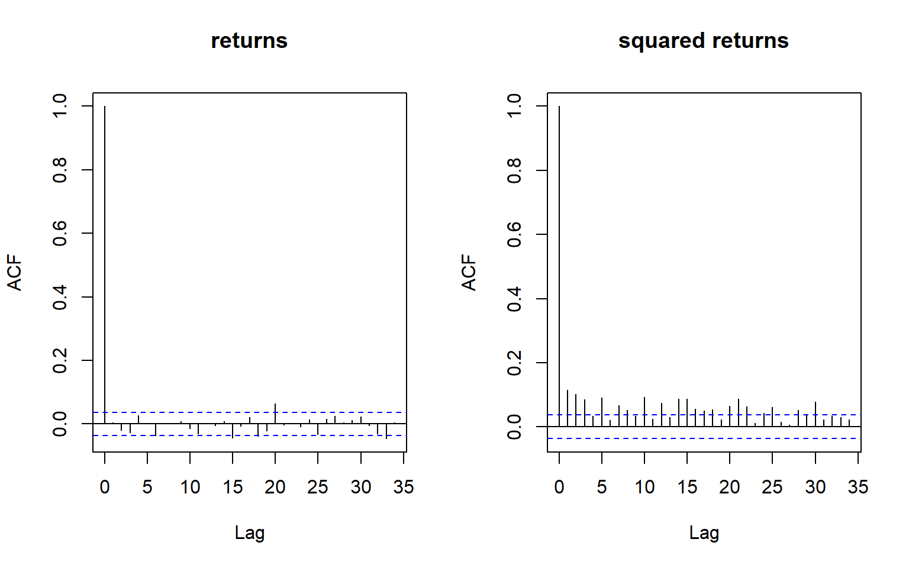
Figure 10.7: ACF plot of logarithmic returns (left) and squared logarithmic returns (right)
In addition to the above Figure 10.7, we also perform an ARCH LM test to check if the squared residuals have significant autocorrelation.
The ARCH test checks for conditional heteroscedasticity in the data. The ACF returns plot shows there is little or no significant correlation at any lags. The couple significant spikes are expected due to random chance when checking over 30 lags. However, the ACF on the squared residuals shows that there are many significant lags. In addition, the ARCH LM test show that there is significant autocorrelation among squared residuals within the first 12 lags. These findings are both evidence that there is volatility clustering in the data, and that the magnitude of a shock is not independent of the magnitude of previous shocks.
10.3 ARCH / GARCH Models
ARCH / GARCH models have two components, where the returns \(r_t\) are a combination of a mean equation \(\mu_t\) and a variance equation \(\varepsilon_t\), which gives us,
\[r_t = \mu_t + \varepsilon_t.\]
The aim of our model is to choose mean and variance equations that best explain our data \(r_t\).
10.3.1 Mean Equation
First we have our mean equation \(\mu_t\). We have two options for our mean equation, either we can use a constant mean,
\[\mu_t = \mu,\]
or we can model the mean using an ARMA(p, q) model,
The Ljung-Box test has a p-value of 0.4588. There is not enough evidence to suggest that there is autocorrelation in the data, even at a 0.1 significance level. Thus, a constant mean is adequate for the returns.
We can investigate further by fitting multiple ARMA models to the data to confirm if a constant mean, an ARMA(0,0), is the best choice. We compare ARMA(0,0), ARMA(1,0), ARMA(0,1), and ARMA(1,1) in Table 10.2 below.
Table 10.2: Log-likelihood, AIC and BIC for four ARMA models for the mean of the returns.
Model
Parameters
LogLik
AIC
BIC
ARMA(0,0)
2
-3920.58
7845.17
7857.08
ARMA(1,0)
3
-3920.55
7847.10
7864.97
ARMA(0,1)
3
-3920.55
7847.10
7864.97
ARMA(1,1)
4
-3920.51
7849.02
7872.84
From Table 10.2 above we see that there is little difference in log-likelihood between the models, and that the gains from adding more model parameters is minimal. In addition, both AIC and BIC scores increase as model complexity increases, indicating the increase performance is due to fitting the noise in the data. Based on this comparison, best form for the mean equation is a constant mean.
However, the ARIMA model assumes constant variance, which is not an assumption made in GARCH models. The coefficient for \(\mu\) from the ARMA(0,0) will not equal the \(\mu\) found by a GARCH model that assumes a constant mean. As our ARMA models suggest a constant mean, and our Ljung-Box test showed there was no significant autocorrelation in the data, for our model, we will use a constant mean in our mean equation. This gives us the following,
In the above variance equation, we have \(z_t\) the random white noise error term, and we have our conditional variance term \(\sigma_t\) which we derive as follows,
Like the mean equation, we want to choose a variance equation that describes how the conditional variance of \(r_t\) changes over time, so that the uncertainty around our predictions of \(r_t\) is more realistic. If the variance was not conditional over time, we would have,
As our above ARCH LM-test and ACF plot of squared residuals both suggest there is conditional variance, we will use a GARCH model. In most cases, a GARCH(1,1) is most suitable, so we will start with that form in our modeling. This, in addition to our constant mean model, gives us the following for \(r_t = \mu_t + \varepsilon_t\),
In addition to estimating parameters for the variance equation \(\alpha_0\), \(\alpha_1\) and \(\beta_1\), we also have to choose a distribution \(D\) for the error term \(z_t\), which can be modelled using either a normal distribution, or a student-t distribution. Determining which form of variance equation to use will be done during modeling below.
10.4 rugarch Models
Having chosen a constant mean, we use the rugarch package to fit a GARCH(1,1) variance equation. We use GARCH(1,1) as it is the standard specification and higher orders add extra parameters without improving model performance. The general GARCH(p, q) model with a constant mean has the parameters,
We estimate the \(\theta\) parameters using maximum likelihood.
10.4.1 Normally Distributed Errors
We first fit the model with normal errors, \(z_t \sim N(0, 1)\), and use a quantile plot of the standardised residuals to check whether a heavier-tailed distribution is needed. This is shown in Figure 10.8 below.
Estimate Std. Error t value Pr(>|t|)
mu 0.0067 0.0155 0.4300 0.6672
omega 0.0074 0.0038 1.9507 0.0511
alpha1 0.0366 0.0045 8.2079 0.0000
beta1 0.9555 0.0021 465.1679 0.0000
Code
z_n <-as.numeric(residuals(fit_n, standardize =TRUE))qqnorm(z_n, main ="QQ plot of standardised residuals (normal GARCH)")qqline(z_n, col ="red")
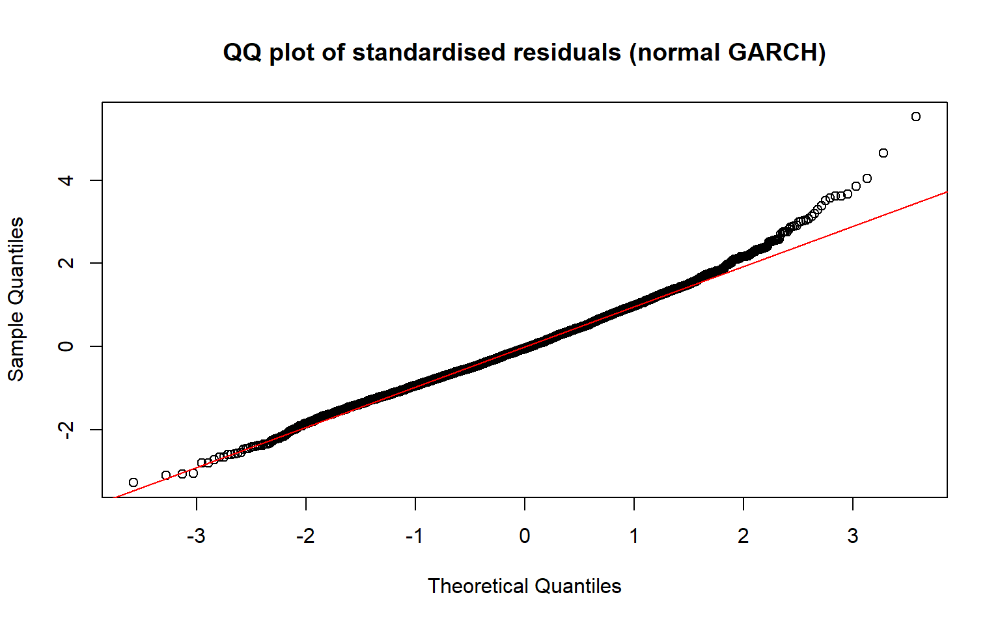
Figure 10.8: QQ plot of the standardised residuals of the GARCH(1,1) model with normal errors.
The QQ plot in Figure 10.8 shows that most of the standardised residuals follow what we would expect under normality, but the right tail is heavier than the normal distribution would predict.
10.4.2 Student-t Errors
We therefore refit with Student t errors, which adds the degrees of freedom \(\nu\) (smaller \(\nu\) means heavier tails), giving us the follow,
# QQ plot of the standardised residuals against the fitted t distributionz_t <-as.numeric(residuals(fit_t, standardize =TRUE))nu <-coef(fit_t)["shape"]n <-length(z_t)qqplot(qt(ppoints(n), nu) *sqrt((nu -2) / nu), z_t,xlab ="Theoretical t quantiles", ylab ="Standardised residuals",main ="QQ plot against fitted t (GARCH-t)")abline(0, 1, col ="red")
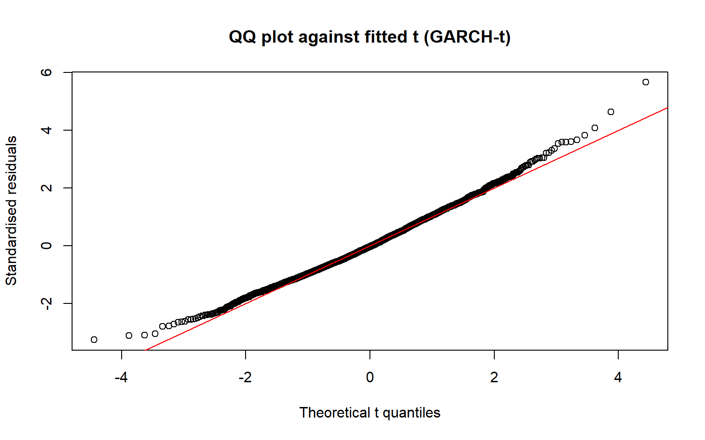
Figure 10.9: QQ plot of the standardised residuals against the fitted Student t distribution.
In Figure 10.9 above, the QQ plot of the Student t model shows an improvement, as the right tail is now closer to the red line. However, the left tail is now lighter than the fitted t expects, while the right tail is still slightly heavier. This suggests that the tails are asymmetric.
10.4.3 Skew Student-t Errors
The Student t is symmetric, so it cannot fit both tails at once. To address this, we will fit a model using a skew Student-t distribution, which adds a skewness parameter \(\xi\), which gives the following,
# QQ plot of the standardised residuals against the fitted skewed t distributionz_st <-as.numeric(residuals(fit_st, standardize =TRUE))q_st <-qdist("sstd", p =ppoints(length(z_st)), mu =0, sigma =1,skew =coef(fit_st)["skew"], shape =coef(fit_st)["shape"])qqplot(q_st, z_st,xlab ="Theoretical skewed t quantiles", ylab ="Standardised residuals",main ="QQ plot against fitted skewed t (GARCH-skewed t)")abline(0, 1, col ="red")
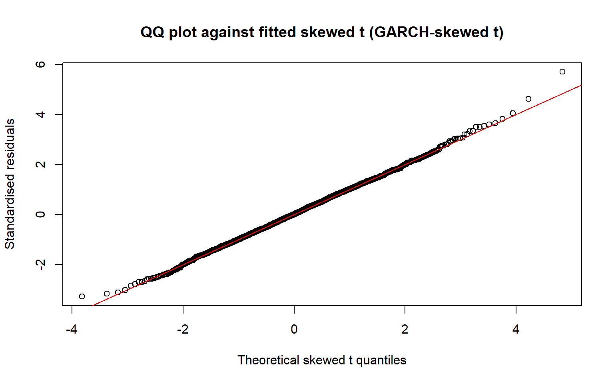
Figure 10.10: QQ plot of the standardised residuals against the fitted skewed t distribution.
10.4.4 Model Comparison
The three models share the same mean and variance equations, they only differ in the distribution of \(z_t\). The normal has no extra parameters, the Student t adds \(\nu\), and the skewed t adds \(\xi\) as well. We compare the AIC and BIC scores of the three models in Table 10.3 below.
Code
ic <-cbind( # comparing the normal, t and skewed t fitsGARCH_normal =infocriteria(fit_n)[1:2, 1],GARCH_t =infocriteria(fit_t)[1:2, 1],GARCH_sstd =infocriteria(fit_st)[1:2, 1])round(ic, 4) |>as.data.frame()
Table 10.3: AIC and BIC (per observation) for the three error distributions.
GARCH_normal
GARCH_t
GARCH_sstd
Akaike
2.6888
2.6767
2.6666
Bayes
2.6971
2.6871
2.6791
For both AIC and BIC in Table 10.3 above, the GARCH model using skew Student t errors outperforms the models with normal errors and the student t errors. Given the QQ plot on the skew Student t model was also the best, we will use skew Student t errors in our model, which gives us the following final model,
The GARCH(1,1) variance equation depends on \(\varepsilon_{t-1}^2\), so it responds identically to positive and negative shocks of the same size (§7.11). The skewed t errors allow the two tails of \(z_t\) to differ, but they do not change this. To allow the variance to respond asymmetrically (the leverage effect), we fit two asymmetric GARCH models, GJR-GARCH and EGARCH, keeping skewed t errors. Both have the same mean equation and error distribution,
In both models \(\delta\) is the asymmetry parameter, and we keep an asymmetric model only if \(\hat\delta\) is significant and the information criteria agree. Note that rugarch labels the EGARCH terms differently, its alpha1 is \(\delta\) (sign) and its gamma1 is \(\alpha_1\) (size). We again use QQ plots to assess the fit of both models, as shown in Figure 10.11 below.
Code
fit_gjr <-ugarchfit(make_spec("gjrGARCH", "sstd"), data = returns)fit_egarch <-ugarchfit(make_spec("eGARCH", "sstd"), data = returns)round(fit_gjr@fit$robust.matcoef, 4)
# Standardised residuals and theoretical skewed t quantiles for each modelz_gjr <-as.numeric(residuals(fit_gjr, standardize =TRUE))q_gjr <-qdist("sstd", p =ppoints(length(z_gjr)), mu =0, sigma =1,skew =coef(fit_gjr)["skew"], shape =coef(fit_gjr)["shape"])z_egarch <-as.numeric(residuals(fit_egarch, standardize =TRUE))q_egarch <-qdist("sstd", p =ppoints(length(z_egarch)), mu =0, sigma =1,skew =coef(fit_egarch)["skew"], shape =coef(fit_egarch)["shape"])par(mfrow =c(1, 2))qqplot(q_gjr, z_gjr, xlab ="Theoretical skewed t quantiles",ylab ="Standardised residuals", main ="GJR-GARCH (skewed t)")abline(0, 1, col ="red")qqplot(q_egarch, z_egarch, xlab ="Theoretical skewed t quantiles",ylab ="Standardised residuals", main ="EGARCH (skewed t)")abline(0, 1, col ="red")par(mfrow =c(1, 1))
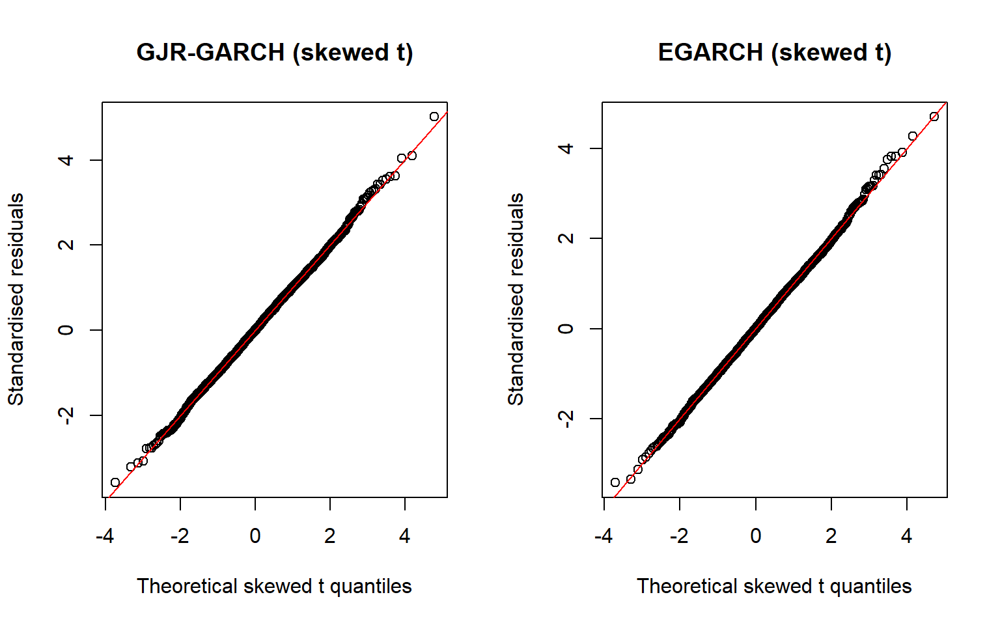
Figure 10.11: QQ plots of the standardised residuals against the fitted skewed t distribution for the GJR-GARCH and EGARCH models.
The above QQ plots in Figure 10.11 both closely follow the red line, as both models fit the data well. We compare the AIC and BIC of both models to our current best model in Table 10.4 below.
Table 10.4: Log-likelihood, AIC and BIC for the GARCH, GJR-GARCH and EGARCH models with skewed t errors. AIC and BIC are per observation; the log-likelihood is the total.
GARCH_sstd
GJR_sstd
EGARCH_sstd
Akaike
2.6666
2.6610
2.6605
Bayes
2.6791
2.6756
2.6751
LogLik
-3800.5181
-3791.5448
-3790.8271
Table 10.4 shows that both GJR and EGARCH outperform our GARCH model. EGARCH fits marginally better than GJR, but the difference in log-likelihood (0.72) is negligible. As GJR is easier to interpret than EGARCH, and it outperforms our GARCH model, we will use the GJR model. Our model is now as follows,
The errors (or innovations) are modelled as skewed Student t with \(\hat\xi = 1.18\) and \(\hat\nu = 14.7\). Since \(\hat\xi > 1\), large positive standardised shocks (rand depreciation) are more frequent than large negative ones, and \(\hat\nu = 14.7\) indicates tails that are heavier than a normal distribution. To check whether the skew is significant, we test \(\xi = 1\) (a symmetric distribution) using \(t = (\hat\xi - 1)/SE\).
Table 10.6: Test of the skew parameter against 1 (a symmetric distribution).
Estimate
Std_Error
t_statistic
1.1786
0.0347
5.15
The t statistic in Table 10.6 is about 5.2, so the skew is significant and a symmetric Student t would not be adequate.
10.6 Residual Diagnostics
Now that we have our model, we check the standardised residuals and the squared standardised residuals for any remaining dependence or ARCH effects. Figure 10.12 shows the residuals and their ACFs, and Table 10.7 shows the tests below.
Code
z <-as.numeric(residuals(fit_final, standardize =TRUE))par(mfrow =c(2, 2))plot(z, pch =16, cex =0.3, xlab ="Time", ylab ="Standardised residual",main ="Standardised residuals")acf(z, main ="ACF of standardised residuals")acf(z^2, main ="ACF of squared standardised residuals")acf(abs(z), main ="ACF of absolute standardised residuals")par(mfrow =c(1, 1))
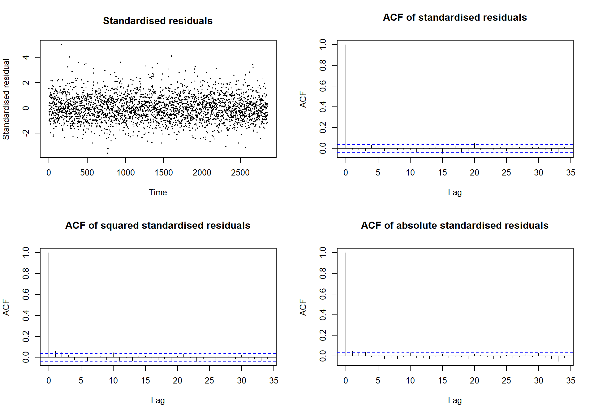
Figure 10.12: Standardised residuals of the GJR-GARCH model over time, and the ACFs of the standardised, squared and absolute standardised residuals.
Code
diag_tab <-data.frame(Test =c("Ljung-Box on z (mean equation)","Ljung-Box on z^2 (variance equation)","Ljung-Box on |z|","ARCH LM test on z"),p_value =c(Box.test(z, lag =10, type ="Ljung-Box")$p.value,Box.test(z^2, lag =10, type ="Ljung-Box")$p.value,Box.test(abs(z), lag =10, type ="Ljung-Box")$p.value,ArchTest(z, lags =10)$p.value))transform(diag_tab, p_value =round(p_value, 3))
Table 10.7: Diagnostic tests on the standardised residuals of the GJR-GARCH model (p-values; large values are the outcome we want).
Test
p_value
Ljung-Box on z (mean equation)
0.653
Ljung-Box on z^2 (variance equation)
0.000
Ljung-Box on |z|
0.009
ARCH LM test on z
0.001
In Figure 10.12, the standardised residuals plot shows no obvious pattern or volatility clustering. The ACF of standardised residuals has only a few isolated lags just outside the bounds, and the Ljung-Box test finds no overall autocorrelation, so there is no evidence of any remaining linear dependence. The ACFs of squared and absolute standardised residuals show significant lags at the first few lags (lags 1 and 2 for both, plus lag 3 for the absolute residuals and lag 10 for the squared residuals), so there may be some remaining weak short-lag dependence in volatility. Table 10.7 shows that the mean equation is adequate (Ljung-Box on \(\hat z_t\), \(p = 0.65\)), but the Ljung-Box tests on \(\hat z_t^2\) and \(|\hat z_t|\) and the ARCH LM test are significant (\(p \le 0.009\)). Together with the ACFs, this indicates weak, short-lag volatility dependence that the GJR-GARCH(1,1) does not capture, which we will treat as a limitation.
10.7 Persistence
We are interested in how long the effect of a shock persists. For the standard GARCH(1,1) model, \(\sigma_t^2 = \alpha_0 + \alpha_1\varepsilon_{t-1}^2 + \beta_1\sigma_{t-1}^2\), the persistence is how slowly a volatility shock fades (close to 1 means very slowly), and is defined as,
\[\rho = \alpha_1 + \beta_1.\]
If \(\rho < 1\), the unconditional variance is the long-run average variance that volatility reverts to, and is calculated as,
The long-run daily volatility is the square root of the unconditional variance, and is the typical size of a daily move in percent. The half-life of a volatility shock is the number of days for its effect to halve, and is approximately,
Negative shocks carry the extra effect \(\delta\), so they enter the persistence as well. With about half of the shocks negative, the persistence becomes
\[\rho = \alpha_1 + \frac{\delta}{2} + \beta_1.\]
We use the same expressions for the unconditional variance and half-life with this \(\rho\).
Table 10.8: Persistence, half-life, long-run variance and long-run volatility of the final model.
Measure
Value
Persistence
0.9956
Half-life (trading days)
157.8200
Long-run variance
0.5181
Long-run volatility (% per day)
0.7198
We take the estimates in Table 10.8 from rugarch, which computes the share of negative shocks from the fitted skewed t distribution, giving \(\hat\rho = 0.9956\), a long-run variance of \(0.518\) (a volatility of \(0.72\%\) per day) and a half-life of about \(158\) trading days. Persistence this close to 1 means shocks to volatility fade very slowly, with the effect of a shock taking about seven to eight months to halve, so periods of high or low volatility last a long time. The estimated reaction to a positive shock is \(\hat\alpha_1 = 0.042\) and the memory of past volatility is \(\hat\beta_1 = 0.973\), while \(\hat\delta = -0.037\) (significant) cuts the effect of a negative shock to \(\hat\alpha_1 + \hat\delta = 0.005\), so volatility rises mostly after positive returns, when the rand weakens.
The mean \(\hat\mu = 0.0186\) is the average daily return, about 0.02% a day. This is tiny compared with the typical daily move of 0.7% to 1%, so the rand barely drifts on average and the day-to-day changes are mostly noise, as for a random walk. The constant \(\hat\alpha_0 = 0.0023\) is the fixed amount added to the variance each day, regardless of the previous shock. It is small on its own, but the long-run variance divides it by \(1 - \rho = 0.0044\), which gives \(0.0023 / 0.0044 \approx 0.52\). This also explains why the long-run level is so uncertain, as when \(\rho\) is close to 1, a small change in the estimates makes a large change in that division.
10.8 Volatility Forecast
Having fitted the model, we look at its estimated conditional volatility over time and at its 20-day volatility forecast, shown in Figure 10.13 below.
Code
rdates <- data_clean$date[-1] # dates that match `returns`long_run <-sqrt(uncvariance(fit_final))fc <-ugarchforecast(fit_final, n.ahead =20)sig_f <-as.numeric(sigma(fc))par(mfrow =c(1, 2))plot(rdates, as.numeric(sigma(fit_final)), type ="l", xlab ="",ylab ="conditional sd (%)", main ="Estimated daily volatility")abline(h = long_run, col ="red", lty =2)plot(1:20, sig_f, type ="b", pch =16, xlab ="days ahead",ylab ="forecast volatility (% per day)", main ="20-day forecast",ylim =range(sig_f, long_run))abline(h = long_run, col ="red", lty =2)par(mfrow =c(1, 1))
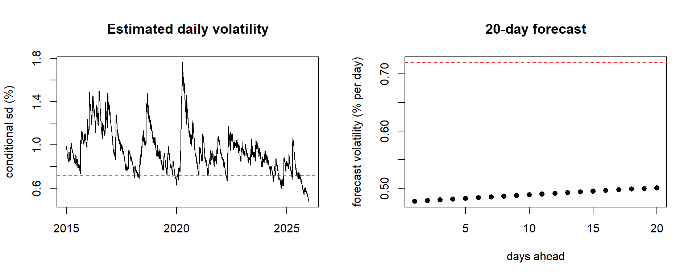
Figure 10.13: Estimated daily conditional volatility of USD/ZAR (left) and the 20-day volatility forecast (right) from the GJR-GARCH(1,1) model with skewed t errors. The dashed line is the long-run volatility.
The left panel of Figure 10.13 shows that the estimated volatility of the rand moves in clear waves. It peaks in 2016 and 2018, at about 1.5% a day, and most sharply in early 2020 at about 1.75% (this is possibly related to COVID-19 which started in 2020), and then falls back each time. Volatility is above the model’s long-run level of 0.72% for most of the sample, and falls to its lowest point, about 0.5% a day, by the end of 2025.
Because volatility is currently low, the 20-day forecast in the right panel rises from 0.48% to 0.50% a day, heading towards the long-run level. It rises only slowly, since persistence is close to 1, so only a small part of the gap closes in 20 days. The forecast says nothing about the direction of the rand, only about how large daily moves are likely to be.
Code
data.frame(Measure =c("Sample standard deviation of returns","Average fitted volatility","Model's long-run volatility"),Value =round(c(sd(returns),mean(as.numeric(sigma(fit_final))),sqrt(uncvariance(fit_final))), 2))
Table 10.9: Sample standard deviation of the returns, average fitted volatility and the model’s long-run volatility (% per day).
Measure
Value
Sample standard deviation of returns
0.96
Average fitted volatility
0.94
Model’s long-run volatility
0.72
Table 10.9 shows that the model’s implied long-run volatility is 0.72% per day, but the sample standard deviation of the returns is 0.96% and the average fitted volatility is 0.94%, so the model’s long-run level is probably underestimated, because it depends on \(\hat\alpha_0\) (not significant) and on persistence very close to one.
10.9 Model Predictions and Actual Data Comparison
We now compare our model, including the conditional variance for our prediction intervals, with our actual data, shown in Figure 10.14 below.
Figure 10.14: Actual USD/ZAR price, one-day-ahead predicted price and the 95% prediction band from the GJR-GARCH model: full sample (top) and the most recent year (bottom).
The predicted price is essentially yesterday’s price, as expected for an exchange rate whose returns are uncorrelated, so the model’s contribution is the width of the prediction band. Over the full sample the band is widest around early 2020, and in 2025 it widens in April and then narrows steadily as the year becomes calmer.
10.10 Fitted Volatility
Figure 10.15 plots the daily returns against plus and minus two fitted conditional standard deviations from our model (red), and against the band that a constant-variance model would give (blue, plus and minus two sample standard deviations).
Figure 10.15: Daily log returns with the 95% prediction band from the GJR-GARCH model and the constant-variance band: full sample (top) and the most recent year 2025 (bottom).
The constant-variance band is the same width throughout, so it is too narrow in turbulent periods (such as 2016 and early 2020, when many returns fall outside it) and too wide in calm ones, whereas the GARCH band widens and narrows with the volatility, reaching about ±3.5% in early 2020 and narrowing to about ±1% by the end of the sample.
10.11 Price Forecast
Finally, we use the model to forecast the exchange rate 20 trading days beyond the end of the data. Figure 10.16 shows the last three months of 2025 and the forecast price with its 95% prediction band. As the daily returns are uncorrelated, the variances add up over the horizon, so the band at day \(h\) uses the cumulative variance \(\sum_{k=1}^{h} \hat\sigma_{T+k}^2\).
Code
p_last <-tail(data_clean$exchange_rate, 1)d_last <-tail(data_clean$date, 1)h <-1:20cum_sd <-sqrt(cumsum(sig_f^2)) # sd of the cumulative return over h daysfdates <-seq(d_last +1, by ="day", length.out =40)fdates <- fdates[as.integer(format(fdates, "%u")) <=5][1:20] # weekdays onlyfc_tab <-tibble(date = fdates,pred = p_last *exp(mu_hat * h /100),lo = p_last *exp((mu_hat * h -2* cum_sd) /100),hi = p_last *exp((mu_hat * h +2* cum_sd) /100))recent <- band |>filter(date >=as.Date("2025-10-01"))ggplot() +geom_line(data = recent, aes(date, price, colour ="Actual price")) +geom_ribbon(data = fc_tab, aes(date, ymin = lo, ymax = hi, fill ="95% prediction band"), alpha =0.35) +geom_line(data = fc_tab, aes(date, pred, colour ="Forecast price"), linetype ="dashed") +scale_fill_manual(values =c("95% prediction band"="red")) +scale_colour_manual(values =c("Actual price"="black", "Forecast price"="blue")) +labs(x ="", y ="rand per dollar", fill =NULL, colour =NULL) +theme_bw() +theme(legend.position ="bottom")
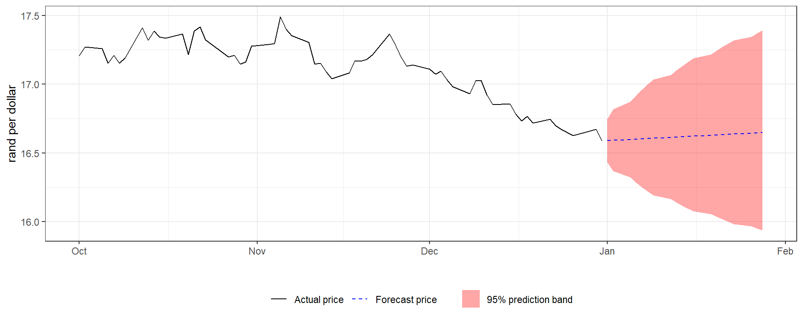
Figure 10.16: Actual USD/ZAR price for the last three months of 2025, and the 20-day-ahead price forecast with its 95% prediction band from the GJR-GARCH model.
The forecast price is almost flat at about R16.6 per dollar, which is essentially the last observed price. It rises very slightly because the estimated mean return is a small positive drift (\(\hat\mu = 0.0186\%\) a day), which adds up to only about 0.4% over 20 days, much smaller than the width of the band. The model’s information is in the band, which starts at about R16.4 to R16.7 on day 1 and widens to about R15.9 to R17.4 by day 20. It widens because uncertainty accumulates over the days, which makes the band a cone rather than parallel lines. The forecast says nothing about the direction of the rand, only how far it could plausibly move.
The volatility forecast and prediction bands are useful for risk management, for example setting risk limits and value-at-risk figures that tighten in calm periods and widen in turbulent ones, or deciding how much exposure to the rand to hedge. They have limits, though. They say nothing about the direction of the rand, since the point forecast is essentially the last price. The residual tests showed some remaining volatility dependence the model misses. The long-run level is poorly estimated, and the forecasts rely on the 2015 to 2025 data, so they cannot anticipate a sudden event or structural break such as the April 2025 spike.
10.12 Reflection
The hardest part was keeping apart ideas that sound similar. I first thought that skewed t errors and the GJR-GARCH or EGARCH models did the same job, since both are about asymmetry, but they are not the same thing. The skewed t describes the shape of the error distribution \(z_t\) (whether large positive and negative standardised shocks are equally likely), while GJR and EGARCH change how the variance reacts to the sign of the previous shock. Once I separated them I could fit and compare both properly. I also found that packages and textbooks use different parameterisations. In rugarch, the EGARCH alpha1 is the sign term and gamma1 the size term, which is the reverse of my notes, so I had to check the formulas against the output rather than trust the names.
Residual diagnostics took me a long time. I did not expect the model to still show dependence after a good QQ plot and good information criteria. I had to work out that the Ljung-Box test on \(\hat z_t\) checks the mean equation and the test on \(\hat z_t^2\) checks the variance equation, which showed my mean equation was fine while a little volatility dependence remained. I tried GJR(2,1) and GJR(1,2) to remove it, and neither did, so I report it as a limitation rather than hide it. I also had to learn that persistence for the GJR model is not simply \(\alpha_1 + \beta_1\), and that the long-run variance can be badly estimated when persistence is close to one, as my 0.72% a day is well below the sample standard deviation of 0.96%.
Through this project I learned that choosing a model is a sequence of small decisions, each backed by evidence. For example, a constant mean from the Ljung-Box test and ARMA comparison, skewed t errors from QQ plots and AIC/BIC, and GJR over EGARCH because the fit was almost the same and GJR is easier to interpret. I also learned how to read the output, such as testing the skew with \((\hat\xi - 1)/SE\) rather than the package’s p-value, which tests against zero. Plotting the model against the data taught me the most about what GARCH does. The point forecast of an exchange rate is just yesterday’s price, and the value of the model is in the width of the band, which was widest in early 2020 and in the April 2025 spike. A constant-variance band has the same overall coverage, but it misses far more of the turbulent days.
If I did this again, I would first try other variance structures to deal with the leftover dependence. I would refit the model before and after 2020 to check for a structural break, and evaluate the forecasts out of sample instead of only fitting in sample. I planned to write my own GARCH(1,1) log-likelihood and compare it to rugarch, but dropped it because of time, so my estimates rely on the package. I would also use a news impact curve to show the asymmetry visually, and I would investigate the six extreme returns I removed, to see whether they are data errors or real market events, rather than simply excluding them.
The most interesting result for me was that a model with an almost-zero mean and strongly persistent volatility describes the rand well, which matches what I’d expect of an exchange rate that moves like a random walk with changing risk.